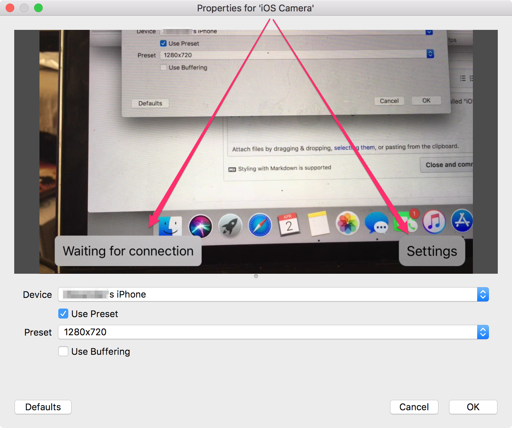
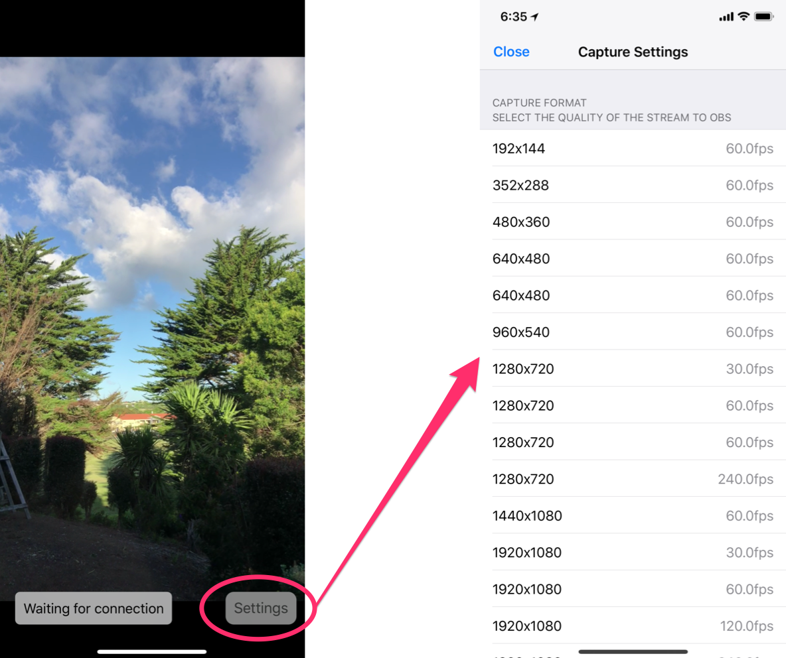

Topics
You see something along the lines of this after adding the iOS Camera source in OBS Studio:

If you see this, the iOS Camera plugin hasn't loaded correctly. There was an issue in version 1.0.0 of the plugin that caused this issue on Mac's. This is now fixed in version 1.1.0 of the plugin. I am sorry about this issue. Please redownload the installer from here to install the updated OBS Studio plugin. 😃
You can select the video resolution that your iPhone sends to OBS by tapping on the settings button.
Be careful though, higher resolutions and framerates can cause undesirable lag. I'd recommend streaming using either 720p@60 or 1080p@30. Future updates will allow you to configure the bitrate to allow streaming of higher resolutions and framerates if people desire this feature.

If OBS crashes after adding the iPhone Camera source to your scene, try again and make sure to follow the instructions at the top of this page. I've experienced this issue and it always works the second time - I know this isn't good enough, and I'm looking into the cause of this issue.
Make sure you've installed iTunes. On Windows iTunes provides the service to communicate to your iOS device over USB. iTunes doesn't need to be running, it needs to have been installed and ran once.
v1.1.0 - Improve performance of decoding, allows higher frame rates and resolution (depending on your hardware) - Improve connection reliability so it's now easier to connect a device. If you have trouble, toggle the visibility of the iOS Camera input and that'll force a reconnection. If that doesn't work, force quit Camera for OBS Studio on your iOS Device and try again - working on improving this. - Fix issue on OSX where you had brew install ffmpeg before the plugin would load v1.0.0 - Initial release with Mac & PC Support 🎉
v1.2.0 - Add front camera support! - Improve UI layout during rotation - Improve connection handling v1.1.1 - Add installation instructions for Windows - Add message about higher resolutions and framerates - Set keyframe duration to every 10 frames to improve sync v1.1.0 - Add new icon - Add link to the OBS Plugin in the settings screen - Add ability to see which resolution is currently selected in the settings screen - Fix issue where rotating your device in the settings screen, and then closing the settings screen would result in the video preview being laid out incorrectly - Fix issue where the video would playback in super speed after closing settings after a minute or two - Improve the appearance of the settings button v1.0 - Initial Release